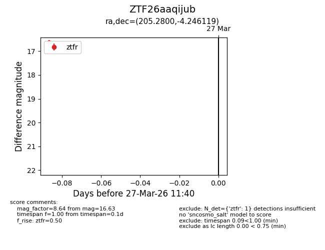
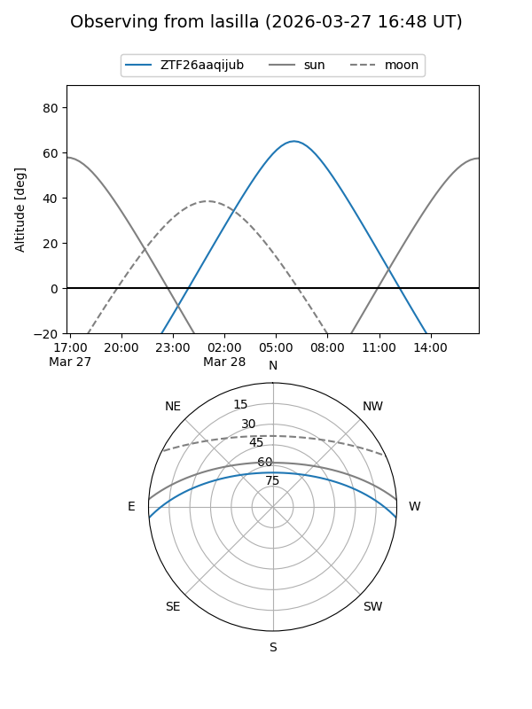
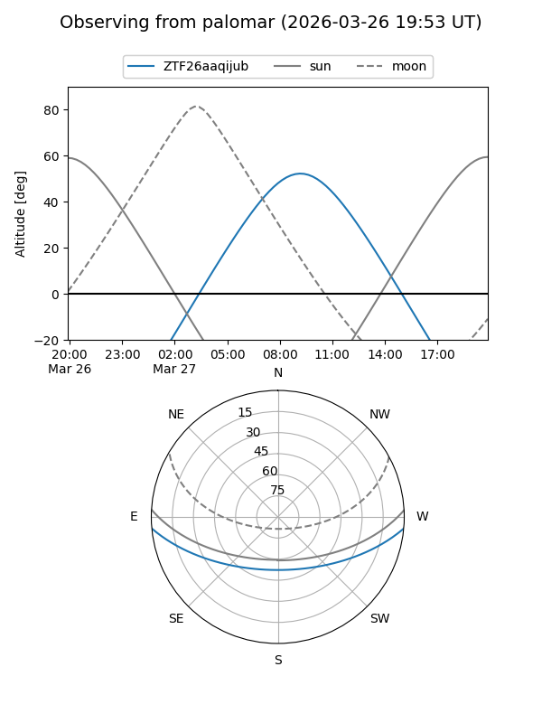

ZTF26aaqijub
Target ZTF26aaqijub at 2026-03-27 11:43
Aliases and brokers:
FINK: link
Lasair: link
ALeRCE: link
alt names
ZTF26aaqijub (ztf,fink_ztf)
Coordinates:
equatorial (ra, dec) = 205.2800,-4.24612
equatorial (HMS+DMS) = 13:41:07.20,-04:14:46.03
galactic (l, b) = (325.7431,+56.40930)
Flags:
Photometry:
last ztfr=16.63
1 ztfr detections
Lightcurve

Visibility


Additional plots